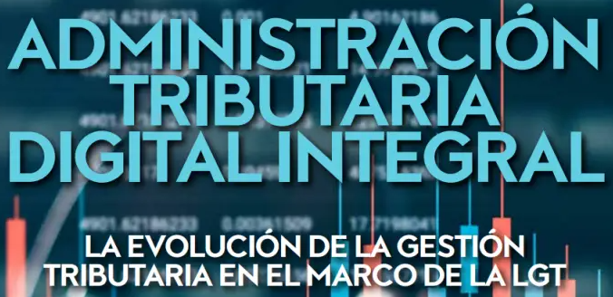

Ser tu socio estrategico
Nos encargamos de las Declaraciones mensulaes (IGV-RENTA) y anuales, SIRE, declaración del PLE (Programa de
libros electrónicos), recursos humanos, inscripción de trabajadores al T-registro (alta, baja), presentación
del Plame, presentación y envío de ticket mensual AFP en digital / impreso, cálculo gratificaciones,
vacaciones, cts, liquidaciones, utilidades, elaboración de planilla de sueldos, planilla de construccion
civil, elaboración de contratos modales de trabajo, representacion ante las entidades supervisoras,
fraccionamiento de deudas, recuperación de tributos, análisis de cuentas contables, preparación de estados
financieros, consolidación de estados contables, impresión de libros contables.
Nuestros Servicios de Asesoría Contable y Outsourcing otorgarán al cliente tranquilidad y seguridad en
su
gestión administrativa, manteniendo una contabilidad veraz, ordenada y al día, así como el seguimiento,
pago
correcto y oportuno; de sus impuestos derivados de su gestión tributaria y laboral.
Nos dedicamos a desarrollar toda la gestion administrativa de tu empresa, olvidate de la SUNAT, AFP,
MTPE y SUNAFIL
DERECHO LABORAL Y SEGURIDAD SOCIAL
Brindamos asesoría laboral en general.
Planeamiento contractual y salarial.
Seguridad y salud ocupacional.
Intermediación laboral y outsourcing.
Procedimientos judiciales, procedimientos de inspección y de reclamación ante el Seguro Social de Salud
(EsSALUD) y negociaciones colectivas.
También asesoramos en la contratación de trabajadores extranjeros.
Politicas salariales.
Reglamento interno de trabajo (RIT)
Raglamento interno de seguridad y salud en el trabajo (RISST)

PLANILLAS
Elaboración y cálculo de la planilla de remuneraciones.
Elaboración de las planillas de AFP.
Liquidación de beneficios sociales.
Calculo, distribucion, retencion y pago de EPS.
Cálculo de gratificaciones, CTS, vacaciones, utilidades.
Calculo y pago de ESSALUD.
Afiliacion, calculo y pago del SIS.
Declaración y Pago de Impuestos PLAME.
Control de vacaciones.
Emisión de Boletas de Pago.
Administración del T Registro.
Aplicacion de escalas salariales.
Estructuras salariales.
Planillas integrales.
Afiliacion al REMYPE (Regimen de micro y pequeña empresa).
CONTABLE Y OUTSOURCING FINANCIERO
Contamos con el mejor staff de profesionales con una amplia experiencia para atender a todo tipo de
empresas, personas naturales o jurídicas, dentro de la micro o pequeña empresa, así como a las empresas
dentro del regimen general.
Servicio y asesoria Contable.
Asesoría Tributaria.
Asesoría Laboral.
Asesoría Financiera.
Asesoria en Apalancamiento financiero.
Conciliaciones bancarias.
Tesoreria.
Flujo de caja real.
Servicios de Auditoría.
Servicios de Constitución de Empresas.
Servicio Administrativo Integral.
Dashboard, ventas, costos y gastos.
Implementacion y manejo de centro de costos.
Registo y presentacion del NOF.
GESTION TRIBUTARIA
Asesoramos a nuestros clientes en el correcto aplicacion de la legislación tributaria en los distintos
sectores de la actividad empresarial para prevenir futuras contingencias ocacionadas por la
interpretacion de las entidades ficalizadoras.
Asesoría en derecho tributario, cálculo, recuperaciones, devoluciones, regularizaciones de tributos y tasas.
Planeamiento Tributario mensual y anual.
Análisis y determinación del Impuesto a la Renta e IGV y demás mensual y anual.
Afrontamos los procesos de fiscalización tributaria por SUNAT.
Asesoría y preparación de recursos de reclamación y apelación.
Asistencia en los procedimientos de devolución y/o recuperación de tributos.

RECURSOS HUMANOS
Seleccion de presonal.
Adminsitracion de personal.
Elaboracion de contratos modales de trabajo.
Control de vencimientos de contratos.
Afrontamos los procesos de fiscalización tributaria por SUNAT.
Firma de documentos de control de asistencia.
Emsion de constancias y certificados de trabajo.
Emision de certificados de renta de 5° categoria.
Evaluaciones de desempeño.
Gestion de bonos, comisiones, prestamos, adelantos y descuentos.

Realizamos toda la gestion adminitrativa de la empresa, en materia laboral, tributaria, contable, financiera Y gestion de presonal.